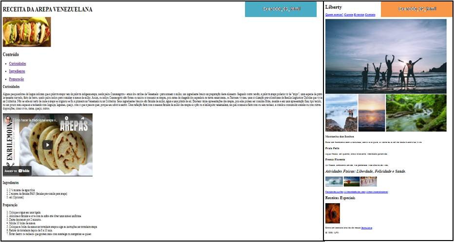

Na Secretaría de Ambiente, eu fiz um relatório que teve sucesso na Controladoria do Estado por descrever e
detalhar as origens das atividades que estavam sendo desenvolvidas para proteger os corpos de água mais
importantes do Estado Carabobo (Venezuela) como o Lago de Valencia e o Reservatório de Água “Embalse Pao-Cachinche”.

Esses são os meus primeiros exercícios realizados e executados de forma satisfatória no curso Front-end
especificamente em html, para mim é uma grande conquista ter realizado estas atividades, é uma grande alegria.